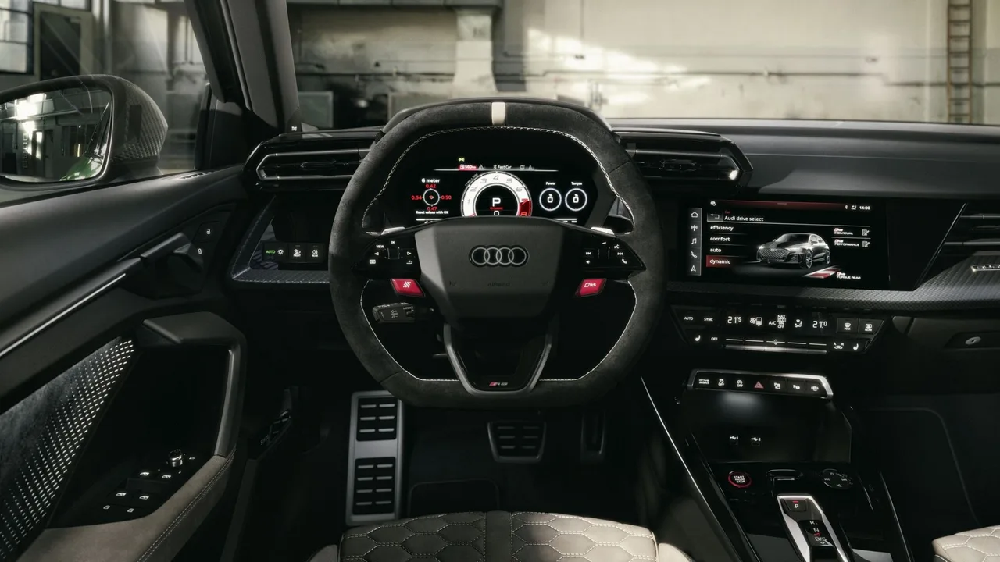
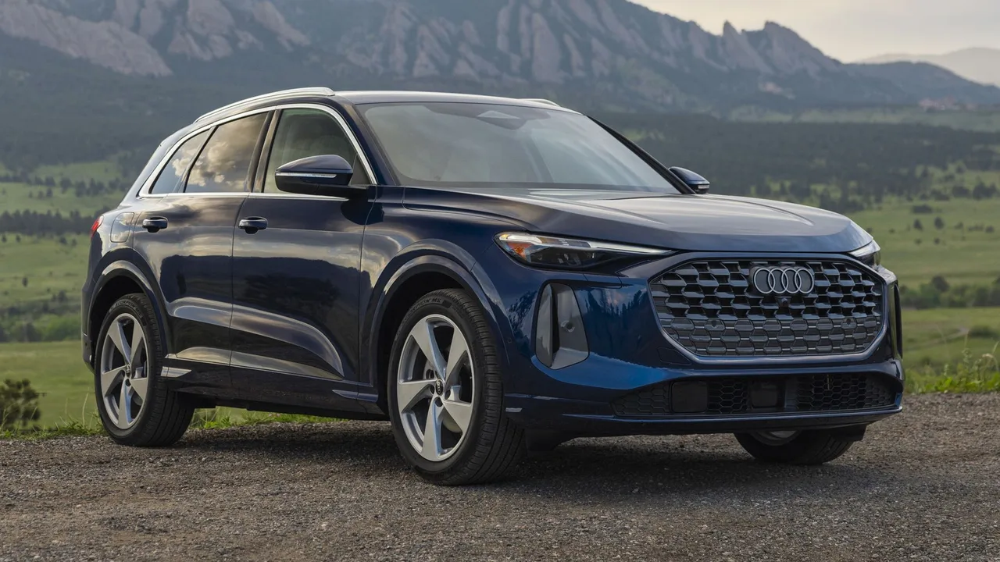
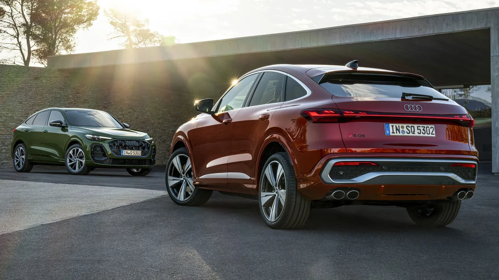

▲ 아우디는 독일 프리미엄 3사로 묶이지만, 장기 내구품질에서는 별도로 봐야 한다는 지적이 나온다
독일 럭셔리카를 놓고 고민할 때 신뢰성은 보통 첫 번째 고려 사항이 아닙니다. 그런데 그래야 한다는 지적이 나왔습니다.
최신 J.D. 파워 내구품질조사(VDS)는 한 가지를 분명히 합니다. 세 갈래 별과 프로펠러 배지, 네 개의 링이 장기 보유 관점에서 결코 동등하지 않다는 것입니다.
1. 왜 신뢰성이 뒤로 밀리나
프리미엄 브랜드를 볼 때 사람들이 먼저 보는 것은 디자인, 브랜드, 주행 감각입니다. 신뢰성은 대체로 "일본차의 영역"으로 넘겨집니다.
그러나 그 판단은 구매 시점에서만 유효합니다. 3년 뒤부터는 다른 항목이 됩니다. 보증이 끝나가고, 전자장비 고장이 시작되며, 수리비 단가가 브랜드에 비례해 올라갑니다.
📍 VDS가 다른 조사와 다른 점
J.D. 파워의 내구품질조사(VDS)는 신차 품질이 아니라 보유 3년 차 시점의 문제를 봅니다.
출고 직후 결함이 아니라 시간이 지나며 드러나는 문제를 잡아내기 때문에, 실제 소유 경험에 더 가깝습니다.
2. 세 브랜드의 격차
아우디와 BMW, 메르세데스-벤츠 사이의 격차는 대부분의 구매자가 생각하는 것보다 큽니다.
이 셋을 "독일 프리미엄 3사"라는 하나의 묶음으로 부르는 습관이 오히려 판단을 흐립니다. 같은 국적, 비슷한 가격대라는 것 외에 내구품질이 같아야 할 이유는 없습니다.

▲ 실내 화면과 전자장비가 늘어날수록 3년 차 이후의 변수도 함께 늘어난다 ⓒ CarBuzz
3. 플러그가 달리면 문제가 는다
조사에서 확인된 경향 가운데 하나는 분명합니다. 플러그가 달린 차량(EV·PHEV)이 그렇지 않은 차량(내연기관·하이브리드)보다 문제를 더 많이 겪습니다.
전동화가 곧 단순화를 뜻하지는 않는다는 이야기입니다. 부품 수는 줄어도 새로운 종류의 고장이 생깁니다.
| 구분 | 경향 |
|---|---|
| 내연기관 · 하이브리드 | 상대적으로 문제 적음 |
| EV · PHEV | 문제 더 많음 |

▲ 전동화 모델이 늘어날수록 브랜드 전체의 내구품질 지표도 함께 흔들린다 ⓒ CarBuzz
4. 진짜 원인은 화면입니다
더 흥미로운 발견이 있습니다. 지난 10년간 자동차 설계를 지배해 온 "바퀴 달린 스마트폰" 접근법이, 지금은 조사 대상 운전자들의 내구품질 불만을 이끄는 가장 큰 원인으로 지목됐습니다.
물리 버튼을 없애고 화면으로 몰아넣은 설계가 고장과 불만의 진원지가 됐다는 뜻입니다. 최근 여러 제조사가 버튼을 되돌리고 있는 흐름과 같은 맥락입니다.
📍 화면이 문제인 이유
기계식 버튼은 고장 나면 그 버튼만 안 됩니다.
통합 화면은 문제가 생기면 공조·오디오·주행 설정이 한꺼번에 영향을 받습니다. 게다가 소프트웨어 문제는 재현이 어려워 수리 과정도 길어집니다.
5. 업계 전체가 흔들리고 있습니다
신차의 내구품질은 전반적으로 요동치는 상태입니다. 보유 3년 차 오너 수천 명의 응답을 바탕으로 한 올해 조사는 여러 변화와 흐름을 드러냈습니다.
특정 브랜드 하나의 문제가 아니라, 산업 전체가 소프트웨어 중심 설계로 넘어가는 과정에서 겪는 진통에 가깝습니다.

▲ 전동화와 소프트웨어 전환이 겹치면서 신뢰성 지표의 변동폭이 커졌다 ⓒ CarBuzz
6. 구매 전에 확인할 것
브랜드가 아니라 모델과 파워트레인 단위로 봐야 합니다.
| 순서 | 내용 |
|---|---|
| 1 | 해당 모델·연식의 내구품질 데이터 |
| 2 | 파워트레인 — 내연기관 / 하이브리드 / EV·PHEV |
| 3 | 인포테인먼트 세대 — 통합 화면 도입 시점 전후 |
| 4 | 보증 종료 이후 예상 수리비 |
같은 브랜드 안에서도 편차가 큽니다. "아우디는 어떻다"는 문장보다 "이 모델의 이 연식, 이 파워트레인은 어떻다"가 훨씬 유용한 정보입니다.